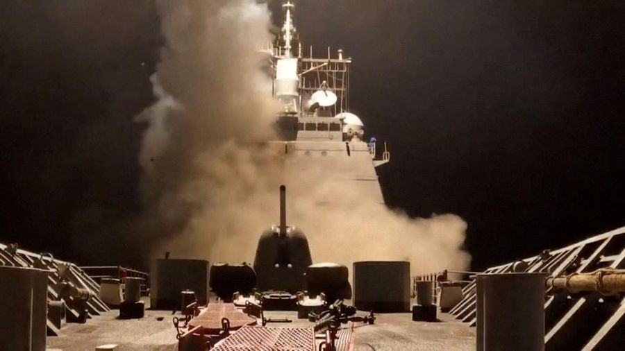
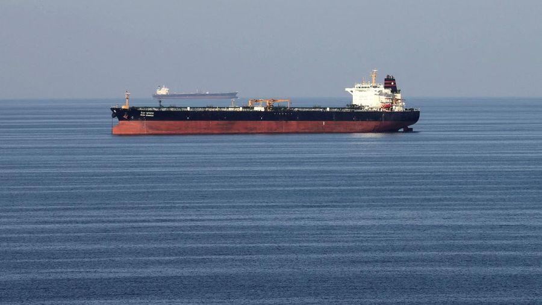
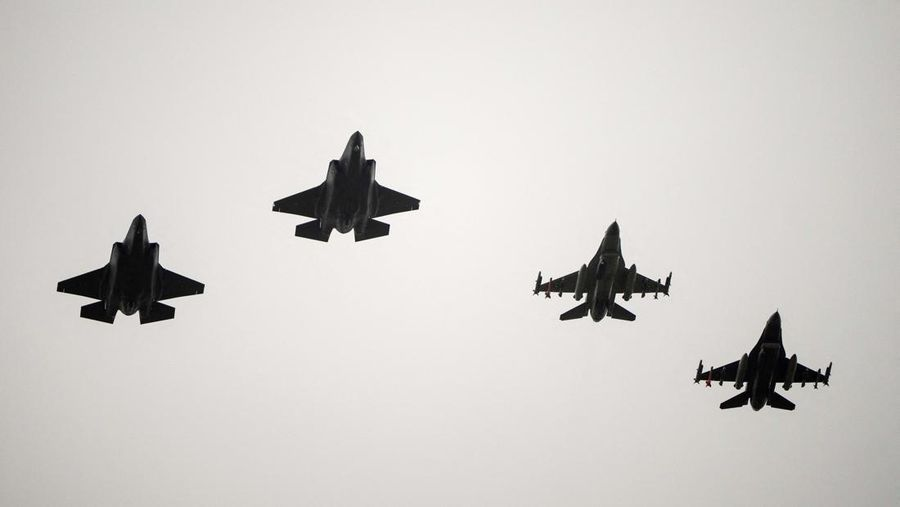

Perang Dunia 3 di Depat Mata, Iran Ancam Serang Pangkalan Militer AS
Iran mengancam akan menyerang pangkalan militer Amerika Serikat (AS) di kawasan Timur Tengah sebagai respons atas serangan udara besar-besaran yang menurut Washington telah melumpuhkan fasilitas nuklir utama Teheran. Ketegangan meningkat tajam, memicu kekhawatiran akan meluasnya konflik di kawasan.
"Setiap negara yang wilayahnya digunakan oleh pasukan Amerika untuk menyerang Iran akan kami anggap sebagai target sah," kata Ali Akbar Velayati, penasihat Pemimpin Tertinggi Iran Ayatollah Ali Khamenei, dalam pernyataan yang disiarkan kantor berita IRNA, Minggu waktu setempat, dikutip Senin (23/6/2025).

Bukan Nuklir, Senjata Iran Ini Buat AS Ciut Sampai Minta Bantuan China
Potensi Perang Dunia 3 meningkat pesat setelah Amerika Serikat melancarkan serangan udara ke tiga situs nuklir utama Iran. Langkah ini memicu spekulasi luas bahwa Teheran dapat membalas dengan cara yang tak kalah strategis dengan menutup atau mengganggu lalu lintas pelayaran di Selat Hormuz, jalur vital yang selama ini menjadi titik nadi perdagangan minyak dunia.
Teheran menyatakan bahwa semua opsi akan dipertimbangkan untuk mempertahankan diri.
"Kami tidak akan tinggal diam. Iran akan mengambil langkah-langkah yang diperlukan untuk membela kedaulatannya," tegas pihak berwenang Iran setelah serangan udara AS.

Siap-Siap Perang Dunia 3, Inggris Borong Jet Tempur Pembawa Nuklir
Pemerintah Inggris mengumumkan rencana pembelian 12 unit jet tempur F-35A yang mampu membawa senjata nuklir taktis, dalam langkah yang disebut sebagai ekspansi terbesar kemampuan nuklir negara itu dalam satu generasi terakhir.
Pengumuman ini disampaikan langsung oleh Downing Street, bertepatan dengan KTT NATO di Den Haag, Belanda.
Pembelian jet tempur buatan Lockheed Martin ini akan memungkinkan Angkatan Udara Kerajaan (RAF) Inggris kembali memiliki kemampuan membawa senjata nuklir dari udara untuk pertama kalinya sejak akhir Perang Dingin.